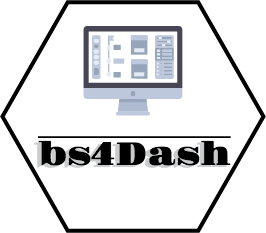

Introduction 
shinydashboard is currently built on top of AdminLT2 and uses bootstrap 3. Yet, bootstrap 4 is already released and nothing was available for shiny, regarding dashboards. bs4Dash is built on top of AdminLTE3 and bring also extra components from boostrap 4. The syntax is very close to that of shinydashboard so that users are not lost. Find out more on github.
Installation
You can install this package from CRAN or the latest dev version via github:
# from CRAN
install.packages("bs4Dash")
# devel version
devtools::install_github("DivadNojnarg/bs4Dash")